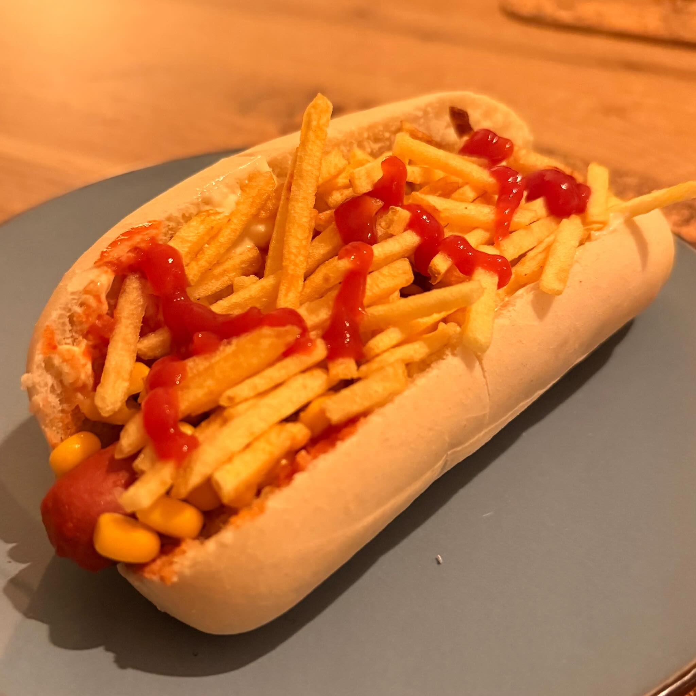

ingrediënten
- 10 hotdogworstjes
- 10 hotdogstappen
- 500 g tomatenpassata
- 1 gesnipperde ui
- 1 eetlepel olijfolie
- 150 g mayonaise
- 2 geperste teentjes knoflook
- Kruiden naar smaak
- 100 g geraspte kaas
- 100 g maïs
- 100 g stroaardappelen (minifriet)
voorbereiding
- Voeg in een pan de olijfolie en de ui toe en kook op middelhoog tot ze goud zijn.
- Voeg de tomatensaus toe en roer tot het kookt.
- Voeg de worstjes toe en laat ze 10 minuten koken.
- Voeg in een kleine kom mayonaise, geperste knoflook en kruiden toe.
- Volg deze stappen om de hotdog in elkaar te zetten:
- Snijd het brood eerst kruislings door en smeer een dunne laag knoflookspread op elk binnenoppervlak.
- Voeg het worstje zonder saus toe.
- Voeg de geraspte kaas toe en voeg vervolgens een kleine hoeveelheid hete saus toe om de kaas te laten smelten.
- Voeg de maïs en minifriet toe.
- Serveer met ketchup of mosterd naar smaak.
observaties
Kleine kerk: Deze hotdogopstelling is geïnspireerd op de hotdogkraam voor de Igrejinha Nossa Senhora de Fátima op 307 zuid, in Brasília, en ook op Landi's, op 305 zuid.
Aardappelpuree: Als je uit São Paulo komt, wil je waarschijnlijk aardappelpuree aan je hotdog toevoegen. Doe dit op eigen risico, want door de saus en gesmolten kaas kan het te zacht zijn.
over de ingrediënten
Worstjes
Hier kunnen alle soorten knackworst of hotdogs worden gebruikt: varkensvlees, rundvlees, kip of vegetarisch.
Tomatenpassata
Passata kan worden vervangen door andere soorten tomatensaus.
Geraspte kaas
Een versere kaas zoals jong, jong belegen, kaas voor pasta of Tex-Mex werkt goed, maar andere kaas die smelt kan ook.
Kruiden
Enkele voorbeelden zijn oregano, rozemarijn, salie en tijm.
Minifriet
Een versie vergelijkbaar met Braziliaanse stroaardappelen wordt in de grote supermarkten verkocht als minifriet.